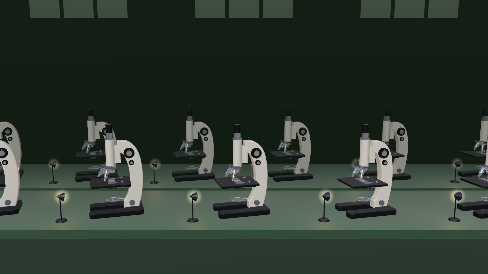

MikroskopMitosisMeiosis
50 soal latihan, kunci, dan pembahasan
Model 3D, skema 2D, dan foto mikroskop asli
Bab Epitel dan permainan untuk menghafal
Pelajari tiap bab sambil melihat modelnya bergerak, lalu kerjakan soal aslinya.
Satu sel menjadi dua
Sebelum mulai
Kenali mikroskop
100× · fokus tajam
Preparat: ujung akar bawang, diwarnai aceto-orcein.
Interfase
dari ibu dari ayah
Interfase
dari ibu dari ayah · panjang = pasangan A, pendek = pasangan B
G1
Empat jaringan dasar
Bekerja diKulit
inti sitoplasma, warna seperti pewarnaan HE
Empat jaringan dasar
Bekerja diKulit
inti sitoplasma, warna seperti pewarnaan HE
Main & hafalkan
Lima permainan singkat untuk mengulang materi Epitel dan Histologi. Skor terbaikmu tersimpan di browser ini.
Latihan soal
Ringkasan untuk dihafal
Semua yang sering muncul di soal, dalam satu halaman. Baca sebelum ujian.
Kata kunci di soal
Kalau kata ini muncul di soal, jawabannya hampir pasti tahap di sebelahnya.
Ciri cepat tiap epitel
Ciri cepat tiap sel
Satu baris per sel: bentuknya di mikroskop dan tempatnya bekerja.
Tanya jawab cepat
Sumber dan bacaan lanjut
Sumber yang dipakai untuk mengecek kunci dan membuat model 3D. Semua bisa dibuka gratis.